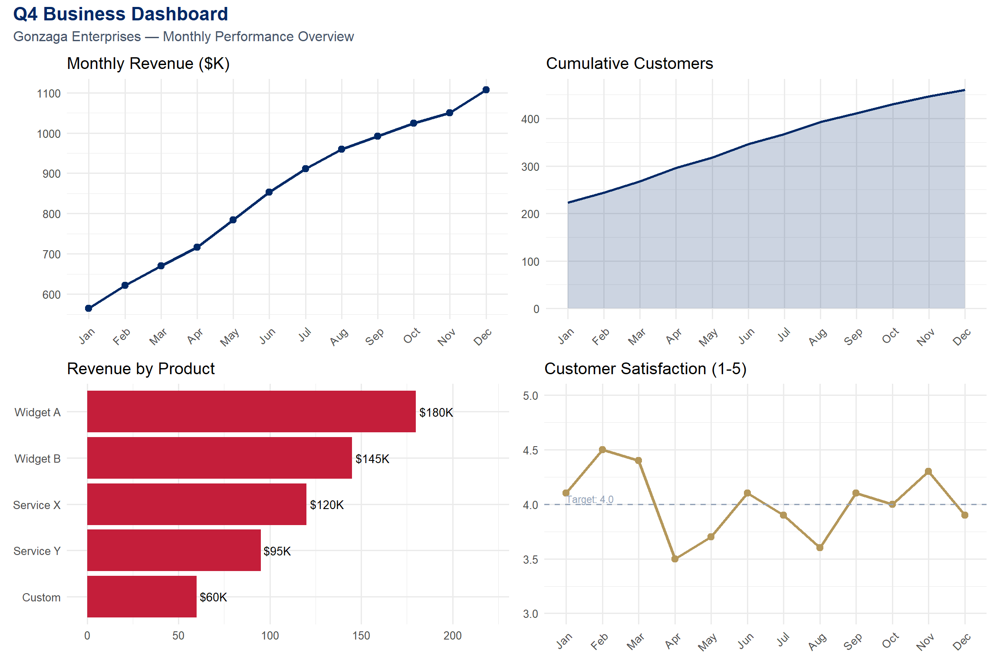
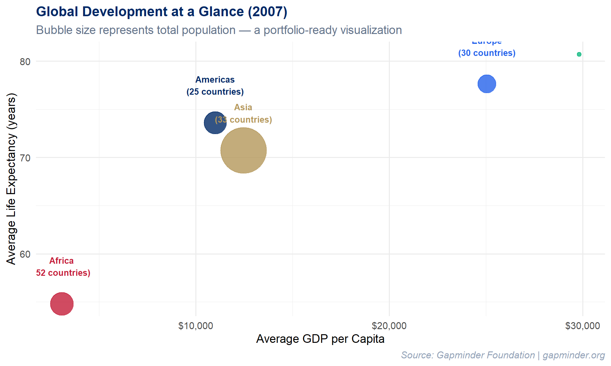

Week 8: Capstone — Visualization in Practice
Learning Objectives
By the end of this week, you will be able to:
- Apply visualization skills to real-world business problems
- Understand visualization for social good and justice
- Navigate ethical challenges in data visualization
- Build a visualization portfolio that demonstrates range and depth
- Complete the final capstone project synthesizing all eight weeks of learning
We have arrived at the final week. Over the past seven weeks you have built an extraordinary toolkit: you can perceive visual patterns, apply design principles, construct layered graphics with ggplot2, choose appropriate chart types, wrangle messy data into tidy form, add interactivity, and map geographic data. In Week 6, you also saw a demonstration of Shiny – R’s framework for building reactive web applications. This week we bring it all together. We ask the questions that matter most: What will you do with these skills? Who will benefit? And how will you ensure your work is honest, inclusive, and purposeful?
This is a capstone in the truest sense – not just a final project, but a moment of integration. The technical skills you have acquired are powerful, but power without direction is hollow. This week we connect your craft to purpose: business value, social good, and ethical responsibility.
Common Errors – Capstone Troubleshooting
These are the most common issues students encounter when working on their final R Markdown capstone documents. Save yourself hours of frustration by reading these before you start.
“My R Markdown won’t knit”
Check for unmatched backticks, missing library() calls,
or chunks that depend on objects created in earlier chunks that errored
out. If Chunk 3 creates an object called my_data but Chunk
3 has an error, then Chunk 5 which uses my_data will also
fail. Fix errors from the top of your document downward.
“My plot looks different when knitted vs. in RStudio”
The knitted version uses the fig.width and
fig.height values from the chunk options, not your RStudio
plot pane dimensions. Set these explicitly in each chunk header:
```{r my-plot, fig.width=10, fig.height=6}. The default is
often too small for complex multi-panel dashboards.
“Interactive widgets don’t show in PDF”
Interactive widgets (plotly, DT,
leaflet) only work in HTML output. If you need interactive
elements in your capstone, make sure your YAML header says
output: html_document, not
output: pdf_document. You cannot have both – choose HTML if
you want interactivity.
“My code works when I run it line by line but not when I knit”
Knitting runs in a fresh R session. It does not have
access to objects you created in the console, packages you loaded
manually, or data files you read in outside the .Rmd file.
Make sure every library() call and every data loading step
is inside a code chunk in your .Rmd file. A good test:
restart R (Session > Restart R), then click “Knit.” If it fails, you
have a missing dependency somewhere in your document.
1. Business Applications of Data Visualization
In industry, the ability to create clear, compelling visualizations is one of the most sought-after analytical skills. Every function of a modern organization relies on data visualization to make decisions:
- Marketing: Customer segmentation plots, A/B test result comparisons, campaign performance dashboards, funnel analysis charts
- Finance: Revenue trend lines, risk analysis heat maps, stock performance charts, budget variance visualizations
- Operations: Supply chain monitoring dashboards, quality control charts (SPC), process flow visualizations, inventory level trackers
- Human Resources: Employee engagement survey results, diversity and inclusion metrics, attrition analysis, compensation benchmarking
The key insight for business visualization is that the audience is almost always a decision-maker who is short on time. Your chart must answer a question in seconds, not minutes. Labels must be clear, colors purposeful, and the main takeaway unmistakable.
Let us build a multi-panel business dashboard that a manager might
review at a Monday morning meeting. We use patchwork to
compose four distinct panels into a single cohesive view:
library(tidyverse)
library(patchwork)
set.seed(2024)
# Simulated business data
monthly <- tibble(
month = factor(month.abb, levels = month.abb),
revenue = cumsum(rnorm(12, 50, 15)) + 500,
customers = cumsum(rpois(12, 20)) + 200,
satisfaction = round(runif(12, 3.5, 4.8), 1)
)
p1 <- ggplot(monthly, aes(x = month, y = revenue, group = 1)) +
geom_line(color = "#002967", linewidth = 1.2) +
geom_point(color = "#002967", size = 2.5) +
labs(title = "Monthly Revenue ($K)", x = NULL, y = NULL) +
theme_minimal(base_size = 12) +
theme(axis.text.x = element_text(angle = 45, hjust = 1))
p2 <- ggplot(monthly, aes(x = month, y = customers, group = 1)) +
geom_area(fill = "#002967", alpha = 0.2) +
geom_line(color = "#002967", linewidth = 1) +
labs(title = "Cumulative Customers", x = NULL, y = NULL) +
theme_minimal(base_size = 12) +
theme(axis.text.x = element_text(angle = 45, hjust = 1))
# Product breakdown
set.seed(2025)
products <- tibble(
product = c("Widget A", "Widget B", "Service X", "Service Y", "Custom"),
revenue = c(180, 145, 120, 95, 60)
) %>% mutate(product = fct_reorder(product, revenue))
p3 <- ggplot(products, aes(x = revenue, y = product)) +
geom_col(fill = "#C41E3A") +
geom_text(aes(label = paste0("$", revenue, "K")), hjust = -0.1, size = 3.5) +
labs(title = "Revenue by Product", x = NULL, y = NULL) +
xlim(0, 220) +
theme_minimal(base_size = 12)
p4 <- ggplot(monthly, aes(x = month, y = satisfaction, group = 1)) +
geom_line(color = "#B4975A", linewidth = 1.2) +
geom_point(color = "#B4975A", size = 2.5) +
geom_hline(yintercept = 4.0, linetype = "dashed", color = "#94a3b8") +
annotate("text", x = 1, y = 4.05, label = "Target: 4.0",
hjust = 0, size = 3, color = "#94a3b8") +
labs(title = "Customer Satisfaction (1-5)", x = NULL, y = NULL) +
ylim(3, 5) +
theme_minimal(base_size = 12) +
theme(axis.text.x = element_text(angle = 45, hjust = 1))
(p1 + p2) / (p3 + p4) +
plot_annotation(
title = "Q4 Business Dashboard",
subtitle = "Gonzaga Enterprises — Monthly Performance Overview",
theme = theme(
plot.title = element_text(face = "bold", color = "#002967", size = 16),
plot.subtitle = element_text(color = "#475569", size = 12)
)
)
Study this dashboard carefully. Notice how each panel answers a distinct question: Is revenue growing? Are we acquiring customers? Which products drive revenue? Are customers satisfied? Together, the four panels provide a holistic snapshot of business health. The consistent color scheme – Gonzaga navy for the primary metrics, Gonzaga red for the product breakdown, and Gonzaga gold for satisfaction – creates visual coherence.
Dashboard design principle: Each panel in a dashboard should answer exactly one question. If a panel tries to answer two questions, split it into two panels. If a panel does not answer any question, remove it. Dashboards are not decoration; they are decision-support tools.
3. Ethics in Data Visualization
With the power to shape perception comes the responsibility to do so honestly. Every visualization is an argument – it emphasizes certain patterns and downplays others. The choices you make about scales, colors, labels, and what data to include or exclude are all rhetorical choices. They can illuminate truth or obscure it.
Common Ethical Pitfalls
Cherry-picking data: Selecting only the time period, subset, or variables that support a predetermined narrative. A stock chart that starts at a market low will always show impressive growth. An honest chart shows the full context.
Misleading scales: Truncating the y-axis to exaggerate small differences, using non-zero baselines on bar charts, or employing dual y-axes with mismatched scales to create false correlations. These are among the most common forms of chart deception.
Ignoring uncertainty: Presenting point estimates without confidence intervals, error bars, or any indication of variability. Every estimate has uncertainty; hiding it makes your chart look more authoritative than the data warrants.
Decontextualizing data: Showing raw counts instead of per-capita rates (making large states look worse), comparing absolute numbers across populations of vastly different sizes, or removing seasonal adjustments from time series data.
Privacy concerns: Mapping data at such fine geographic resolution that individuals can be identified. Showing demographic breakdowns of small groups where members might recognize each other’s data points.
Algorithmic bias in automated visualizations: When visualization tools automatically choose scales, bins, or color mappings, they may introduce biases that the creator never intended.
A cautionary example: In 2020, the Georgia Department of Public Health published a bar chart of COVID-19 cases by county where the x-axis dates were not in chronological order. The visual impression was that cases were declining, when in fact they were not. Whether this was intentional deception or an honest mistake, the effect was the same: the chart lied. Always check your axes.
Principles for Ethical Visualization
- Be truthful – Represent the data accurately. Do not distort scales, cherry-pick subsets, or hide inconvenient findings.
- Be transparent – Show your data sources, methodology, and any transformations you applied. A reproducible R Markdown document is inherently more transparent than a static image.
- Be inclusive – Consider diverse audiences. Use colorblind-friendly palettes. Provide alt text for screen readers. Test your charts with people who are not experts in your domain.
- Be humble – Acknowledge uncertainty and limitations. Show confidence intervals. Note sample sizes. Admit what the data cannot tell you.
- Be purposeful – Every visualization should serve a legitimate need. Ask yourself: Does this chart inform, or does it merely impress? Does it help the viewer understand, or does it manipulate?
Cairo’s five qualities of great visualizations: In The Truthful Art, Alberto Cairo argues that excellent visualizations are truthful, functional, beautiful, insightful, and enlightening. Notice that truthfulness comes first. Beauty without truth is propaganda.
4. Building Your Visualization Portfolio
Whether you are heading into an MBA career, a data analytics role, a consulting position, or graduate research, a visualization portfolio is one of the most compelling things you can show a potential employer or collaborator. Unlike a resume, which tells people what you can do, a portfolio shows them.
What to Include
Your portfolio should contain 5 to 8 of your best visualizations, each accompanied by:
- The business or research question the visualization answers
- A brief narrative explaining your design choices (why this chart type, why these colors, why this level of detail)
- Technical details: what tools, data sources, and methods you used
- What you learned or what surprised you in the data
Aim for range: include static charts, interactive visualizations, at least one map, and ideally a dashboard. If you explored Shiny during this semester (you saw a demo in Week 6, and your capstone project can optionally include a Shiny component), a reactive application would further distinguish your portfolio. Show that you can work with different data types (time series, geographic, categorical, high-dimensional) and different audiences (executives, analysts, the general public).
Where to Host
- GitHub Pages – Free, version-controlled, and demonstrates your technical fluency
- RPubs – One-click publishing from RStudio, ideal for R Markdown documents
- Quarto Pub – The modern successor to RPubs, supporting Quarto documents
- Personal website – Maximum control over presentation and branding
- Posit Connect – Enterprise-grade hosting for Shiny apps and R Markdown reports
A Portfolio-Worthy Example
Here is the kind of polished, publication-ready visualization that belongs in a portfolio. It uses the Gapminder dataset to show the relationship between wealth and health across continents, with population encoded as bubble size:
library(gapminder)
set.seed(2024)
gapminder %>%
filter(year == 2007) %>%
group_by(continent) %>%
summarise(
avg_life = mean(lifeExp),
avg_gdp = mean(gdpPercap),
total_pop = sum(as.numeric(pop)),
n_countries = n(),
.groups = "drop"
) %>%
ggplot(aes(x = avg_gdp, y = avg_life, size = total_pop, color = continent)) +
geom_point(alpha = 0.8) +
geom_text(aes(label = paste0(continent, "\n(", n_countries, " countries)")),
vjust = -1.5, size = 3.5, fontface = "bold", show.legend = FALSE) +
scale_x_continuous(labels = scales::dollar_format()) +
scale_size_area(max_size = 25, guide = "none") +
scale_color_manual(values = c(
"Africa" = "#C41E3A",
"Americas" = "#002967",
"Asia" = "#B4975A",
"Europe" = "#2563eb",
"Oceania" = "#10b981"
)) +
labs(
title = "Global Development at a Glance (2007)",
subtitle = "Bubble size represents total population — a portfolio-ready visualization",
x = "Average GDP per Capita",
y = "Average Life Expectancy (years)",
caption = "Source: Gapminder Foundation | gapminder.org"
) +
theme_minimal(base_size = 14) +
theme(
legend.position = "none",
plot.title = element_text(face = "bold", color = "#002967", size = 16),
plot.subtitle = element_text(color = "#64748b"),
plot.caption = element_text(color = "#94a3b8", face = "italic")
)
What makes this portfolio-worthy? It is clean (minimal non-data ink), purposeful (every visual element encodes information), branded (consistent color scheme), and contextualized (clear title, subtitle, and source attribution). If you showed this in a job interview and could explain every design decision, you would make a strong impression.
5. Course Review – The Eight-Week Journey
Let us step back and appreciate how far you have come. Here is the arc of our eight weeks together:
| Week | Topic | Key Skill Acquired |
|---|---|---|
| 1 | Introduction to Data Viz & R | Seeing the importance of visualization (Anscombe, Datasaurus); R setup |
| 2 | Visual Perception & Design | How the eye processes data; Tufte’s principles, data-ink ratio, ethics |
| 3 | Grammar of Graphics & ggplot2 | Building layered plots with data + aesthetics + geoms |
| 4 | Chart Types & Variations | Choosing the right chart: lollipop, ridgeline, treemap, heatmap; Midterm Project due |
| 5 | Data Wrangling Essentials | Tidy data, dplyr verbs, the pipe operator, pivoting |
| 6 | Interactive Visualizations | plotly, DT, heatmaply, a taste of Shiny |
| 7 | Geographic Visualization | Leaflet maps, choropleths, coordinate systems, sf |
| 8 | Capstone: Viz in Practice | Business, social good, ethics, portfolio – putting it all to use |
This progression was intentional. We started with why (Weeks 1–2), moved to how (Weeks 3–5), then explored what else is possible (Weeks 6–7), and now we close with what for (Week 8). The technical skills are the foundation, but the purpose is the structure you build on top.
set.seed(2024)
# Visualizing our 8-week journey
journey <- tibble(
week = 1:8,
topic = c("Intro to\nData Viz & R", "Perception\n& Design",
"Grammar of\nGraphics", "Chart Types",
"Data\nWrangling", "Interactive\nViz",
"Geographic\nViz", "Capstone"),
phase = c(rep("Foundation:\nWhy", 2), rep("Core Skills:\nHow", 3),
rep("Advanced:\nWhat Else", 2), "Integration:\nWhat For"),
complexity = c(1, 3, 5, 6, 6, 8, 8, 10)
)
phase_colors <- c(
"Foundation:\nWhy" = "#002967",
"Core Skills:\nHow" = "#C41E3A",
"Advanced:\nWhat Else" = "#B4975A",
"Integration:\nWhat For" = "#10b981"
)
ggplot(journey, aes(x = week, y = complexity)) +
geom_segment(aes(xend = week, yend = 0, color = phase), linewidth = 1.5, alpha = 0.6) +
geom_point(aes(color = phase, size = complexity), show.legend = FALSE) +
geom_text(aes(label = topic), angle = 35, hjust = -0.1, vjust = -0.5,
size = 3.2, color = "#334155") +
scale_x_continuous(breaks = 1:8, labels = paste("Week", 1:8)) +
scale_y_continuous(limits = c(0, 14)) +
scale_color_manual(values = phase_colors, name = "Phase") +
scale_size_continuous(range = c(4, 10)) +
labs(
title = "Our Eight-Week Journey in Data Visualization",
subtitle = "From foundations through core skills to advanced techniques and integration",
x = NULL, y = "Cumulative Skill Complexity"
) +
theme_minimal(base_size = 13) +
theme(
plot.title = element_text(face = "bold", color = "#002967", size = 15),
plot.subtitle = element_text(color = "#64748b"),
axis.text.x = element_text(angle = 45, hjust = 1),
legend.position = "bottom",
panel.grid.minor = element_blank()
)
Each dot in the chart above represents a week of learning. The color indicates the phase – foundations in navy, core skills in red, advanced techniques in gold, and this final integrative week in green. Notice how the complexity builds. You could not have built an interactive dashboard in Week 1, and you would not have understood the ethical stakes in Week 3. Every week was a necessary step on the path to where you stand now.
6. Final Project Guidelines
Your capstone project is the culmination of everything you have learned this semester. It is your chance to demonstrate mastery, creativity, and purpose.
Timeline
| Milestone | Due Date | Description |
|---|---|---|
| Proposal | End of Week 6 | One-page description of your dataset, research questions, and planned visualizations |
| Draft | End of Week 7 | Working R Markdown document with at least 2 visualizations and preliminary narrative |
| Final Submission | End of Week 8 | Complete, polished capstone document (knitted to HTML) |
Requirements
Choose a dataset meaningful to you or your community. This could be data from your workplace, a social issue you care about, open government data, sports statistics, environmental data, or anything that excites your curiosity. If you are unsure, consult the instructor.
Create at least 4 visualizations using different techniques. Your project should include a range of chart types from across the semester – for example, a bar chart, a scatter plot, a map, and a time series. Do not repeat the same chart type four times.
Include at least 1 interactive element. Use plotly, leaflet, or DT to give your viewer the ability to explore the data on their own terms.
Write narrative explaining your design choices. For each visualization, include 2–3 sentences explaining why you chose that chart type, what question it answers, and what design decisions you made (color, scale, labels).
Address ethical considerations. Include a dedicated section reflecting on the ethics of your visualizations. What might be misleading? What context is important? Who might be affected by how this data is presented?
Present your findings in a polished R Markdown document. The document should be well-organized with clear headings, readable prose, and professional-quality visualizations. Think of this as a document you could share with an employer.
Shiny is optional. You saw a Shiny demonstration in Week 6 and may have experimented with reactive applications on your own. You are welcome to include a Shiny component in your capstone – for example, a small embedded app or a companion Shiny dashboard – but it is not required. If you do include Shiny, deploy it to shinyapps.io and provide the link in your document.
Rubric
| Component | Weight | What We Are Looking For |
|---|---|---|
| Data quality and preparation | 20% | Clean, well-documented data pipeline; appropriate transformations |
| Visualization effectiveness | 30% | Correct chart types; clear labels; purposeful use of color and layout |
| Code quality | 20% | Readable, well-commented code; reproducible pipeline; no unnecessary complexity |
| Narrative and communication | 15% | Clear writing; each visualization is contextualized; logical flow |
| Ethical reflection | 15% | Thoughtful engagement with ethical considerations; intellectual honesty |
Pro tip for the capstone: Start with the question, not the chart. Write down the 3–5 questions you want your visualizations to answer before you open RStudio. The best projects are driven by curiosity, not by a desire to use a particular technique.
7. Ignatian Reflection – Seeing Clearly, Serving Justly
We began this course in Week 1 with the idea that visualization helps us see more clearly. Anscombe’s quartet showed us that raw numbers can hide the truth, while a simple scatter plot reveals it. The Datasaurus Dozen proved that summary statistics are not enough – we need to look at our data.
Now, in Week 8, we come full circle. Seeing clearly is not an end in itself. In the Ignatian tradition, clear sight is the beginning of discernment – the process of figuring out what we are called to do with what we have seen. And discernment leads to action – action in service of others, action for the greater good.
The Jesuit phrase Ad Majorem Dei Gloriam – for the greater glory of God – is not an abstract motto. It is a challenge: use everything you have been given in service of something larger than yourself. The skills you have built in this course – wrangling data, designing charts, building interactive applications – are gifts. The question is: What will you do with them?
From “seeing clearly” to “serving justly”: Visualization is not just a technical skill; it is a moral practice. Every chart you create frames reality for its viewers. You now have the power to illuminate truth, expose injustice, and help decision-makers choose wisely. That power carries responsibility. Use it well.
You have learned to see patterns where others see noise. You have learned to tell stories with data. You have learned that a well-designed chart can change minds, shift resources, and save lives. You have also learned that a poorly designed chart – or a dishonest one – can do real harm.
As you leave this course and carry these skills into your careers, your communities, and your lives, remember this: the chart is never neutral. Every design choice is a value choice. Choose truth. Choose clarity. Choose compassion.
“Go forth and set the world on fire.”
– St. Ignatius of Loyola
8. Exercises and Final Project
Exercises for Week 8
Exercise 1: Business Dashboard
Create a 4-panel business dashboard using patchwork for
a business scenario of your choice. Your dashboard should:
- Use a consistent color scheme throughout
- Include at least three different chart types (line, bar, area, scatter, etc.)
- Have a clear title and subtitle using
plot_annotation() - Include meaningful labels, annotations, or reference lines
- Be designed for a specific audience (e.g., a VP of Sales, a Chief Marketing Officer, a warehouse manager)
In a brief paragraph beneath your dashboard, describe: Who is the audience? What decisions does this dashboard support? What is the single most important takeaway?
Exercise 2: Visualization for Advocacy
Find a real social justice issue that matters to you, locate relevant data (from government open data portals, the Census Bureau, the World Bank, Gapminder, or other public sources), and create a visualization that could be used for advocacy. Your visualization should:
- Use real (not simulated) data
- Tell a clear story about inequality, injustice, or unmet need
- Include a descriptive title, subtitle, and source attribution
- Be designed to move a non-technical audience to understanding or action
Write a one-paragraph explanation of what issue you chose, why it matters, and how your visualization makes the case.
Exercise 3: Ethical Reflection
Find a real-world example of a visualization that was misleading (you may search online for “misleading charts,” “bad data visualization,” or similar terms). Write a 1-page (approximately 500-word) ethical reflection addressing:
- What was misleading about the visualization? (Be specific about the design choice.)
- Was the deception likely intentional or accidental?
- What harm could result from viewers trusting this chart?
- How would you redesign the chart to be truthful while still being compelling?
- What principle from our ethics discussion (truthful, transparent, inclusive, humble, purposeful) was most clearly violated?
FINAL PROJECT: Capstone
Complete the capstone project as described in Section 6 above. Submit a polished R Markdown document (knitted to HTML) containing:
- At least 4 visualizations using different techniques
- At least 1 interactive element
- Design choice narrative for each visualization
- An ethical reflection section
- Clean, reproducible, well-commented code
Refer to the rubric in Section 6 for grading criteria. Remember: your proposal was due at the end of Week 6, your draft was due at the end of Week 7, and this final submission is due at the end of Week 8. This is your opportunity to synthesize eight weeks of learning into a single, impressive document. Make it something you would be proud to include in your portfolio.
Try It: Interactive Sandbox
AI & This Concept AI can assemble a business dashboard in seconds. Your irreplaceable contribution is evaluating whether the layout, emphasis, and design choices tell the right story for your audience. Use this sandbox to develop the vocabulary for that judgment — then apply it to your capstone.
Business Dashboard Composer — Design Before You Code
Attributions
This course material draws on and is inspired by the work of many scholars and practitioners:
- Cairo, A. – The Truthful Art (Peachpit Press, 2016) and How Charts Lie (W.W. Norton, 2019) – foundational texts on visualization ethics and effectiveness
- Schwabish, J. – Better Data Visualizations (Columbia University Press, 2021) – practical guidance for improving chart design
- D’Ignazio, C. & Klein, L.F. – Data Feminism (MIT Press, 2020) – a critical framework for thinking about power, justice, and data
- Gapminder Foundation – gapminder.org – data and tools for a fact-based worldview
- Wilke, C.O. – Fundamentals of Data Visualization (O’Reilly, 2019; freely available at clauswilke.com/dataviz)
- Healy, K. – Data Visualization: A Practical Introduction (Princeton University Press, 2018; freely available at socviz.co)
- Wickham, H. – ggplot2: Elegant Graphics for Data Analysis (Springer, 2016) – the definitive reference for the grammar of graphics in R
- Bryan, J. –
gapminderR package, providing an excerpt of the Gapminder data for teaching - Pedersen, T.L. –
patchworkR package for composing multi-panel plots - Vivek H. Patil – foundational course design and materials for data visualization at Gonzaga University